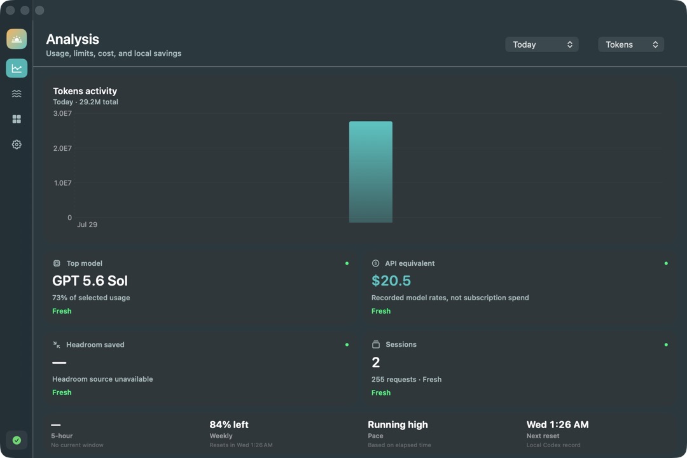
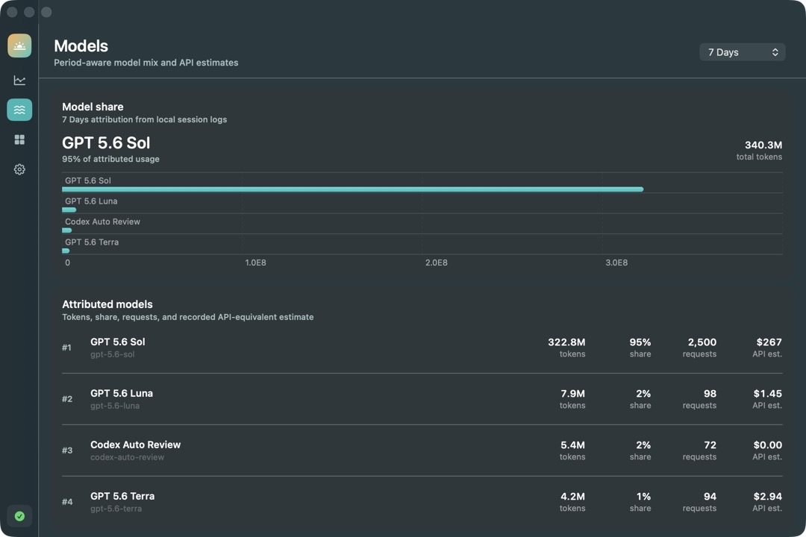

Codex usage for macOS
Know where
your tokens go.
Usage, models, and limits in one clear view. Runway brings your local Codex activity to your Mac and desktop widgets.
macOS 14+ · Apple silicon & Intel

The overview
The whole picture.
On your Mac.
See what you used, which models handled it, and where your limits stand. Explore your activity by period, with local session history in one place.
Model attribution
See the work behind the total.
Compare token share, request counts, and API-equivalent estimates across your models. See how the mix changes from one period to the next.
- 01 Period-aware model mix
- 02 API-equivalent cost estimates
- 03 Local session attribution

Privacy
Local means local.
Your session history stays on your Mac. Runway builds usage snapshots on-device and shares them with your desktop widgets. It has no analytics or advertising SDKs.
Read the privacy policy- Accounts
- None
- Analytics
- None
- Cloud sync
- None
Get Runway
Make room
for the next idea.
Download for Mac
Preview build · Not notarized. First launch may require approval in System Settings → Privacy & Security.